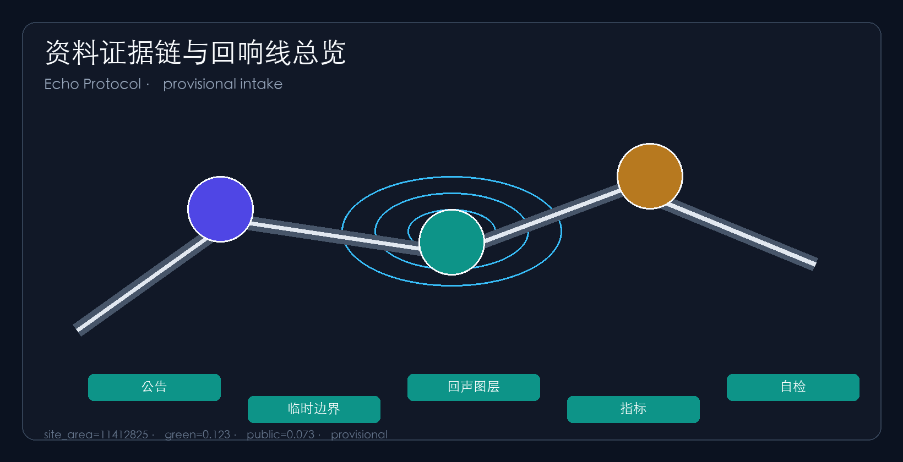
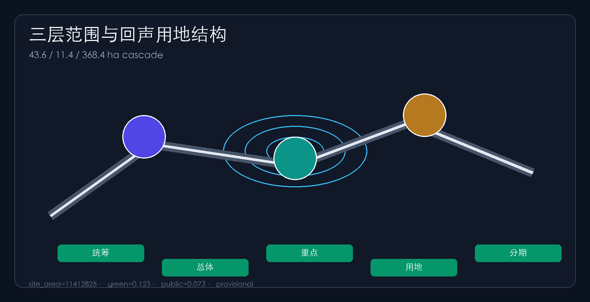
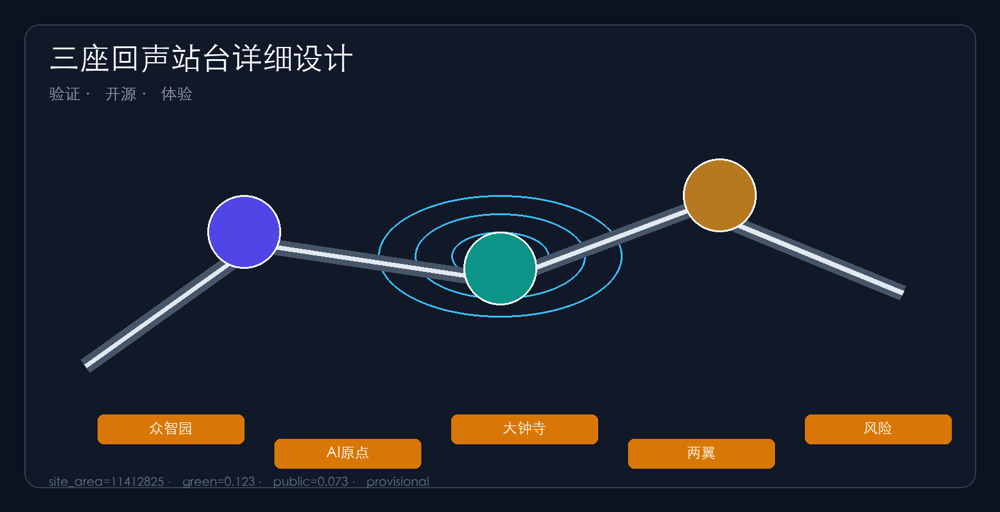
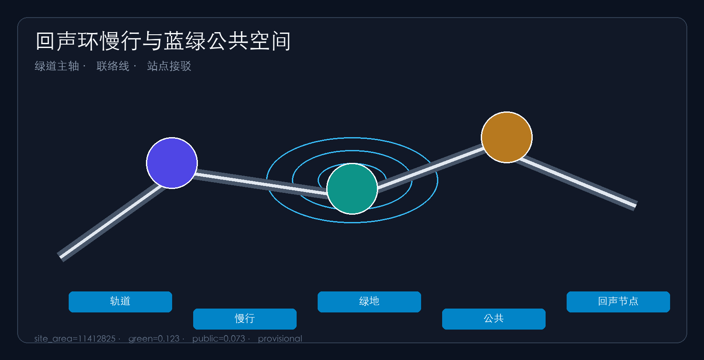
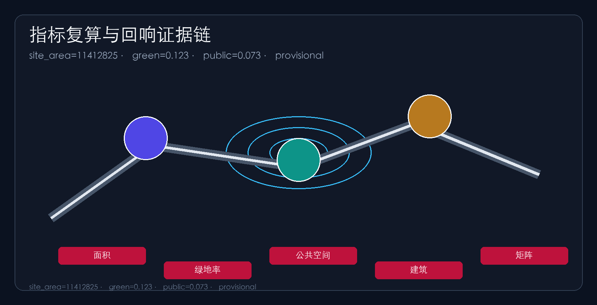

京张回响线 THE ECHO LINE：每一次AI部署都带回公共回声
以「回响协议」组织百年京张AI创新带：上行是模型、算力与场景部署，下行是可复核的公共回声（数据回报、技能回流、文化回响、慢行修复）。一带三核两翼落为可验证的回声站台与回声环，全部基于 provisional 边界的概念建议。
京张回响线 THE ECHO LINE
设计依据与资料清单
本方案以《百年京张AI创新带城市设计国际方案征集》公告三层范围、三处重点区域与设计任务为第一依据 来源，并以智能体开源征集任务书的三项定位、五大功能、三区两翼与 agent.1–agent.6 为任务依据 标准。机器可读依据来自 brief/site-package/ 的 design_brief.json、allowed_design_space.json、sources.json、enums/、ranges/planning_limits.json、schemas/ 与 data/source_registry.json 来源。导航层为 data/processed/agent_fact_pack.md。
由于官方 SITE_BOUNDARY 与三处 KEY_AREA polygon 尚未发布，本包使用 brief/site-package/geometry/provisional_boundaries.geojson 生成临时边界 来源 来源。geometry/site_boundary.geojson 与 geometry/key_areas.geojson 均标注 provisional_constraint、official_boundary=false 空间数据，仅用于方案生成、自检、可视化与讨论，不得作为 official redline、审批依据或精确面积依据；组织方数据缺口不阻断内容评分，正式 polygon 发布后整包重算。面积与比例由提交几何在 EPSG:4548 下复算。

三层范围工作框架
方案按公告三层范围组织：统筹研究约 43.6 km² 负责创新生态与未来城市形态；总体设计约 11.4 km² 负责城市更新、交通市政与风貌；重点区域约 368.4 ha 负责三处详细设计 来源 深度。三层落到 land_use、roads、green_space、public_space、buildings、phasing 图层，并在 compliance_matrix.json 映射公告 1.3–1.5 与 agent.1–agent.6 深度。
| 层级 | 面积 | 设计问题 | 回响线回答 |
|---|---|---|---|
| 统筹研究 | 43.6 km² | 产业与未来城市 | 回响协议：部署—回声—复核闭环 空间数据 |
| 总体设计 | 11.4 km² | 更新与控规深度设计 | 一带三核 + 回声环慢行与公共界面 空间数据 |
| 重点区域 | 368.4 ha | 三片详细设计 | 三座回声站台分别承担验证/开源/体验 空间数据 |
统筹研究范围产业与未来城市研究
区域协同上，方案把回响线视为中关村科学城与更大京津冀创新网络的接口：向北通过清河—北五环方向衔接北纬社区与未来科学城的科研转化需求，向东北预留与怀柔科学城基础研究外溢的交流接口，向东南通过轨道与产业服务翼连接经开区制造与测试场景，向城际层面则以人才、标准、开源成果与路演活动作为京津冀协同的“下行公共回声”要素。上述协同均为概念接口建议，不构成跨行政区的法定规划承诺。
对应 agent.1，总体概念为 「京张回响线 / THE ECHO LINE」：把京张遗址公园读作一条可双向运行的公共创新生产线——上行班次承载模型、算力、场景与企业服务部署；下行班次强制带回可复核的公共回声：慢行修复、开源成果、技能培训、文化叙事与可审计日志 来源 深度。中文主名「京张回响线」，英文名 "THE ECHO LINE"；命名体系含「回声站台 / Echo Station」「回声环 / Echo Loop」「回响协议 / Echo Protocol」。Logo 方向：铁路声波与回声波形同构的双向箭头，配色为铁路灰、回声青与中关村红 来源。
对应 agent.2，对标全球案例提炼六条可转化机制 来源：① 校区—园区—街区叠加（肯德尔广场 / 清华—中关村）；② 开源治理与安全评测一体（Linux 基金会 / 众智园标准廊）；③ 场景开放与数据最小化（新加坡纬壹 / 原点社区沙盒）；④ 绿电—算力—模型双向走廊（北欧数据中心廊道启发，仅作机制参考）；⑤ 人才特区与成果转化（杭州未来科技城）；⑥ 国际路演与开发者节长期品牌（特拉维夫 / 全球开发者生态）。均为参考机制，不构成实施承诺。
三大定位 × 五大功能闭环表（agent.1 / agent.2）
| 定位/功能 | 空间落点 | 运营动作 | 公共回声指标（概念） |
|---|---|---|---|
| 百年京张文化带 | 遗址公园绿带 + 记忆回声线路 | 文化导览日、贡献墙更新 | 开放导览节点数、文化活动场次 |
| 都市AI生活体验带 | 小月河翼 + 大钟寺体验站 | 场景开放日、夜间体验课 | 场景卡使用频次、居民参与率 |
| AI融合创新带 | 众智园验证站 + 原点开源站 | 评测日、开源发布日 | 评测任务数、开源贡献条目 |
| AI全栈自主创新 | 众智园验证回声站台 | 安全评测场、标准工作坊 | 红队测试场次 |
| 世界级AI创新生态 | 原点开源站 + 中关村服务翼 | 路演、投融资对接 | 转化会客场次 |
| AI+场景赋能新范式 | 10 张场景卡落点 | 产业测试沙盒 3 处 | 场景—空间映射完整率 |
| 智能化AI活力城市 | 回声环慢行与公共界面 | 慢行断点诊断与修复 | 断点修复完成数 |
| AI治理全球话语权 | 众智园治理展示 + 国际路演 | 标准公开日、国际周 | 公开评测报告数 |
agent.2 生态图谱与可转化机制
众智园承担全栈自主与评测；原点承担开源协作与近校转化；大钟寺承担智能经济与国际接待；中关村科技服务翼配置资本/IP/算力入口；小月河场景赋能翼配置生活与照料场景。土地与空间用 land_use/public_space 表达接口，人才用五类画像映射，场景用 10 张场景卡映射，数据与治理遵循最小化、可解释、人工复核，不替代审批。
agent.4 公共组件与荣誉体系
公共组件库方向：回声灯塔（朝圣标识）、评测方舟（可参观沙盒外立面）、智音回声广场（四象限停留）、贡献墙（开源/修复贡献铭刻）、日课座椅与导视桩。荣誉体系只记录聚合贡献与可公开成果，不采集个人轨迹。
agent.6 年度运营闭环
年度节奏概念建议：春季开源周、夏季场景开放月、秋季安全治理公开日、冬季国际路演周；每月一次开发者散步道活动。责任边界：空间运营主体、场景主理人、数据治理专员、人工复核官分设，活动可暂停可回滚，不写成已确定财政安排。
未来城市形态强调：AI 改变工作与学习时，公共空间必须同时收获「可解释、可暂停、可回滚」的治理能力；产业战略类指标列入 metrics.json 并标明校准状态 深度。

总体设计范围城市更新与控规深度城市设计
总体设计同时回应《城市设计管理办法》对公共空间、界面与风貌的引导要求，以及建筑设计深度规定对方案表达与深度递进的要求 标准。重点片区详细设计按建筑设计深度相关规定组织功能、交通、公共空间与实施证据，避免只有口号没有可复核图层 标准。开发强度与高度体量在官方控规未到前一律列为待确认，并在正文、assumptions 与 metrics 中同步披露前置条件 深度。
总体设计要求达到控制性详细规划的城市设计深度 标准 深度。更新策略为「识别断点—植入回声接口—缝合慢行—预留复核节点」：AI 研发与教育科研用地沿主轴集聚，京张绿带居中贯通，产业服务与文化交往围绕大钟寺，品质居住与社区服务布置于东侧 空间数据。建筑以保留改造为主、新建为辅，强度与高度在官方控规发布前为 unknown。
交通以京张绿道为慢行主轴、学院路—西土城路为联络线、轨道站点接驳为横轴 空间数据 指标，并预留端侧算力与 AI 公共服务的市政融合原型 深度。道路红线与管线条件缺失列入 assumptions.json。
重点区域详细设计
三处重点区按规划综合实施方案深度展开 深度。
众智园定位 「验证回声站台」：全栈自主创新 + 标准/安全评测公开日，清河界面组织可参观的评测与治理展示 空间数据。北京AI原点社区定位 「开源回声站台」：近校成果转化街、开源发布厅与人才服务，强调贡献可追溯与社区声誉 空间数据。大钟寺定位 「体验回声站台」：智能经济、国际路演与四象限步行连通，让市民与访客感知 AI 服务回声 空间数据。两翼中，中关村科技服务翼负责资本与 IP 回声，小月河场景赋能翼负责生活场景回声。

AI 创新生态、人才画像与 AI+ 场景
五类用户画像 深度：开源开发者、初创团队、头部企业访客、周边居民、高校师生。对应 agent.3，形成 10 张 AI 场景卡 指标：01 回声发布厅、02 可暂停智能体沙盒、03 慢行断点回声诊断、04 人才回声管家、05 安全治理回声廊、06 校企转化回声客厅、07 数据要素回声剧场、08 低碳算力回声驿站、09 京张记忆回声线路、10 全球AI回声周路线。产业测试验证场景≥3：安全评测场（众智园）、端侧算力低碳点、公共空间智能体沙盒。全部为概念建议，不构成已批准运营 。

用地、建筑规模与拆改留方案
用地方案依据国土空间用地分类标准表达 标准。geometry/land_use.geojson 在提交边界内做无缝分区：AI 研发创新用地沿京张主轴北段集聚，教育科研与人才社区用地衔接高校，京张遗址公园绿带居中贯通，产业服务与商业用地、文化展示与国际交往用地围绕大钟寺组织，品质居住与社区服务布置于东侧，并保留弹性预留用地 空间数据。分区数量与结构由图层直接统计 指标。
建筑更新以保留与改造为主、新建为辅。拆改留在缺少现状建筑、权属与控规资料时只给方法与待校准清单，不编造地块级拆除结论 深度。建筑基底面积由 geometry/buildings.geojson 复算，当前数值表示概念示范建筑基底规模，而非测绘现状 指标。总建筑规模、容积率、建筑高度、退线等强度指标因缺官方控制条件列为 unknown，并在 metrics.json 写明前置条件 指标。正式红线与控规发布后，用地分区、建筑规模与拆改留清单均需整包重算。
交通、轨道、市政与公共服务设施
交通方案回应公告对轨道站点一体化、道路微循环、慢行断点与对外交通的要求 标准。总体以京张绿道慢行主轴贯通南北，以学院路—西土城路联络线缝合东西，以轨道站点接驳横轴连接五道口、大钟寺等节点，并在遗址公园跨环路处设置“回声接口”式过街与导向，使创新区与居住区之间形成可解释、可回退的慢行修复闭环 深度。
道路中心线与长度由 geometry/roads.geojson 复算，当前总长度仅作概念廊道规模参考，不构成道路红线或工程线位结论 空间数据。公共活动界面与站城步行连通由公共空间图层表达，用于说明四象限步行与活动节点关系 指标。道路红线、管线、消防与市政条件缺失部分列入 assumptions.json，策略表述不构成审定条件 来源。
市政与公共服务设施覆盖 AI 产业服务设施、创新服务平台、人才生活服务、新型基础设施、分布式能源与端侧算力原型。设施标准与服务半径在正式工程资料发布前列为深化前置条件 深度。所有线位、容量与投资时序均为概念建议，正式控规与市政专项发布后必须整包重算，不得把本段写成已批准的工程实施方案。
蓝绿空间、公共空间与城市风貌
建筑高度、体量与风貌控制在缺少法定控高与风貌导则时，仅给出分区引导：众智园以低干扰验证街区体量为主，原点社区近校尺度与慢行界面优先，大钟寺站城一体适度提高公共界面复合度；具体高度与面宽比待官方条件确认后复算 深度。
对应 agent.4 与 agent.5，蓝绿空间以京张遗址公园活力带为骨架，统筹清河、小月河、高校与社区出行需求，提出南北贯通、东西连通的步道、骑行道与绿色空间体系 深度。京张遗址公园活力绿带居中贯通，形成文化记忆与日常慢行的“回声主廊” 空间数据。清河滨水防护绿地承载生态缓冲与低碳创新交往，公共活动界面与大钟寺站四象限广场组织日常交往与活动 指标。
公共空间比例与节点由 public_space 图层复算，强调可进入、可停留、可举办小型路演与开源发布的界面，而不是只做装饰性绿化 指标。城市风貌融合京张铁路历史文化、中关村创新文化与 AI 新文化，利用清华园火车站等文化资源提出城市基调、体量与公共艺术引导。方案提出不少于 3 个 AI 朝圣地标——回声灯塔、评测方舟、智音回声广场——以及贡献墙、荣誉展示与公共空间组件库方向 来源。品牌、字体与企业标识均需清权来源；风貌控制分清官方管控、设计建议与待确认条件，禁止把概念风貌写成法定控高或法定立面要求。
更新项目清单、实施政策与分期计划
分期实施计划明确近中远期动作：一期完成慢行断点与验证/开源日课试点接口，二期推进站城一体与体验回声连通，三期进入全域回响协议运营与品牌活动闭环；各期依赖权属、市政与控规条件，未获正式依据前不得写成已排定的政府实施时序 深度。
对应 agent.6，六项更新包 指标：EL-01 慢行断点回声缝合、EL-02 众智园验证回声界面、EL-03 原点开源回声街、EL-04 大钟寺四象限回声连通、EL-05 端侧算力回声节点、EL-06 全球AI回声周路线 来源 深度。三期：一期回声试点，二期站城回声更新，三期全域治理与品牌运营。活动与运营说明责任边界与风险，不写成已确定安排。

指标体系、面积复算与合规矩阵
可复算空间指标含 site_area_sqm、building_footprint_area_sqm、green_ratio、public_space_ratio、road_total_length_m、land_use_zone_count、phase_count、key_area_count 指标 指标 指标；管控类为 unknown。合规矩阵覆盖公告 1.3–1.5 与 agent.1–agent.6；标准矩阵六项，深度矩阵十五项 complete 。
风险、版权与合规说明
主文件中文，proposal.en.md 提供对照译文；图纸、HTML、可视化提供英文副本。图片与代码在 sources.json 与 report/copyright_statement.md 披露来源；HTML 离线，无 CDN/远程瓦片/外部脚本/API 来源。风险与缺资料由 深度 空间数据 与 assumptions.json 记录。本方案不声称官方批准或实施承诺，所有空间落地为概念建议、参考方案或可供专业团队深化的内容。
参考资料
- brief/public-brief.md 与 brief/site-package/design_brief.json 来源
- brief/site-package/agent_taskbook.json 来源
- brief/site-package/geometry/provisional_boundaries.geojson 来源
- data/source_registry.json 与 data/processed/agent_fact_pack.md
- 官方公告资格预审文件
- 完整机器索引见
sources.json、metrics.json与三个矩阵